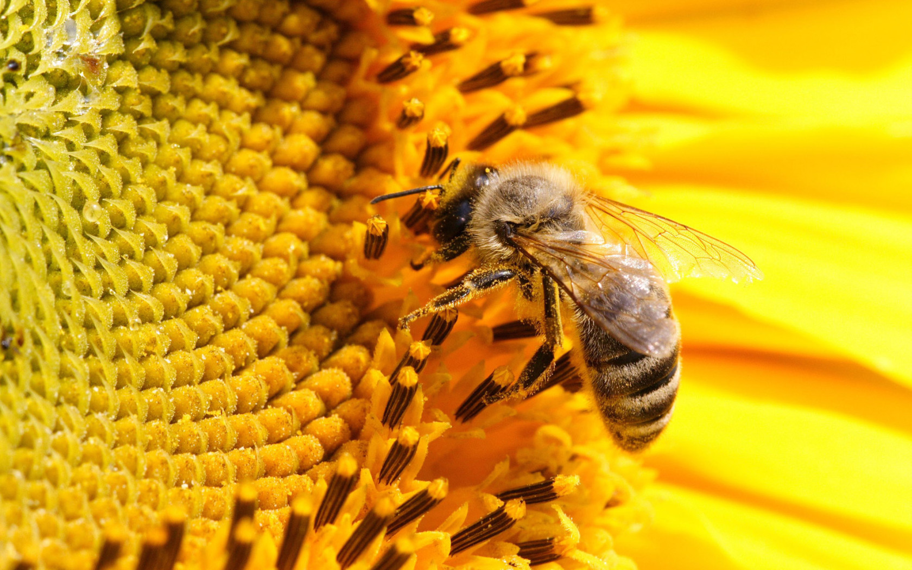

Полезные свойства мёда
Чайная ложка натурального меда, данная ребенку перед сном, действует как успокоительное средство, поможет быстрее уснуть и избежать энуреза.
Мед повышает энергетический уровень, жизненный тонус человека и придает сил. Не даром во время проведения древних олимпийских игр, спортсмены соблюдали диету, в которую входило большое количество натурального мёда.
Лечение кашля хорошо поддается меду, останавливая кашель. При простуде выпивайте на ночь стакан горячего молока с чайной ложкой мёда.
Мёд не вызывает брожение в желудке, поэтому может использоваться, для того чтобы подавить кислотное расстройство желудка.
Мед, смешанный с имбирем, соком лимона и теплой водой, уменьшает чувство тошноты и придает сил.
Употребление натурального меда помогает сократить мускульные судороги. Они происходят из-за низкого уровня кальция и высокого уровня фосфора в крови. Мед приводит эти уровни в сбалансированное состояние.
Мед используют при лечении анемии, так как в нем содержится много полезных веществ, в особенности железо и медь, а нормальный уровень гемоглобина в крови зависит от необходимого количества именно этих элементов в организме.
Вредные свойства меда
При всем наборе полезных свойств, мед обладает и противопоказаниями. В первую очередь это касается людей с аллергией на мед и его составляющие. Иногда бывает так, что аллергию вызывает только конкретный сорт меда. Если вы попали в эту категорию аллергиков, то вам не обязательно полностью отказываться от меда, а просто методом подбора можно выбрать тот сорт, на который аллергии не будет
Важно помнить, что нагретый свыше 40 градусов мёд теряет все свой полезные свойства, а нагретый свыше 60 градусов еще и выделяет токсичный оксиметилфурфурол, который способен причинить серьезный вред организму.
Как надо хранить мёд?
Оптимальной считается температура от -6 до +20°С. То есть при комнатной температуре лучше мед не хранить – он портится и расслаивается. Если долго держать его при температуре выше 20 градусов, то разрушится часть витаминов.
Если вы хотите вернуть былую текучесть загустевшему меду, то нужно просто прогреть его в горячей воде, до тех пор пока кристаллы не растопятся. Имейте в виду, что прогревать нужно не всю банку, а только необходимое на данный момент количество. Ведь такая термообработка несколько снижает качество и полезность лакомства.
Как пчелы делают мед?
Пчелы не один раз перекладывают нектар, превращающийся в мед, из одной ячейки в другую, а еще часто вентилируют соты с помощью крыльев, способствуя большему испарению влаги. Таким образом при помощи ферментации и одновременного снижения содержания воды нектар и превращается в мед.
Только многолетние настойчивые наблюдения, достижения химического анализа и развитие биологических исследований на микроскопическом уровне позволили приблизиться к открытию большинства тайн, связанных с этим поразительным веществом.
Продажа мёда населению
Мёд — сладкий вязкий продукт, который вырабатывают пчёлы и родственные насекомые. Пчелиный мёд представляет собой частично переваренный в зобе медоносной пчелы (Apis mellifera) нектар либо сахаристые выделения некоторых растений или некоторых питающихся соками растений насекомых. По происхождению натуральный мёд может быть цветочный и падевый.
Цветочный мёд производится пчёлами в процессе сбора и переработки нектара, выделяемого нектарниками цветковых растений.

В зависимости от медоносного растения, нектар которого был собран пчёлами, мёд различается по цвету, вкусу и запаху.
Если мёд получен с одного определённого вида растения, то его называют монофлорным, обычно ему придают название этого растения — например, липовый, кипрейный, гречишный, подсолнечниковый.
Если пчёлы собрали нектар с разных растений, то такой мёд обычно называют полифлорным (смешанным), или просто цветочным.
Получить мёд с одного медоносного растения практически невозможно — рядом с пасекой обычно одновременно цветёт несколько медоносов, а при откачке вместе со свежим мёдом могут попадать старые запасы пчелиной семьи, собранные ранее с других растений.
Стоимость нашего меда
| Вид |
Цена |
Наличие |
| Липовый |
20$ за литр |
10 тонн |
| Сосновый |
30$ за литр |
7 тонн |
| Клеверный |
40$ за литр |
5 тонн |
| Одуванчиковый |
50$ за литр |
1 тонна |
Мёд - лучшее лекарство!
Согласно данным Национального института здоровья США, мёд может быть эффективен при лечении ожогов, ран, кашля, диабета, мукозита. Мёд имеет подтверждённые противомикробные (антибактериальные, антимикотические, антимикобактериальные) свойства, интерес к которым в последнее время растёт.Человек забирает у пчёл часть мёда, но должен оставить количество, необходимое для сохранения и развития пчелиной семьи. Кулинарная ценность различных видов мёда примерно одинакова, но для питания пчёл использование падевого мёда нежелательно, а в зимний период — совершенно недопустимо.
Покупайте наш мёд
Продукт используется для лечения кашля. Он благотворно воздействует на слизистую носоглотки, создает отхаркивающий эффект.
Рапсовый мед не так сильно согревает, как липовый. Но при употреблении с теплым молоком оказывает потогонное действие. Быстрее уходит простуда.
Спазмолитическое действие меда незаменимо при мышечной ломоте во время лихорадочных состояний, при высокой температуре. Нектар принимают внутрь вместе с теплым питьем.
Рапсовый мед используется и наружно. Он способствует быстрейшему заживлению ожогов, язв.
Скорее всего, регенеративные свойства объясняются высокой питательностью нектара. Ведь в меде очень много глюкозы, сахарозы, декстринов.
Женщины оценят косметическое действие золотистого продукта. Он подходит для укрепления волос, возвращения коже здорового цвета, ее питания, устранения мелких морщинок. Поэтому из рапсового меда можно готовить различные домашние маски.